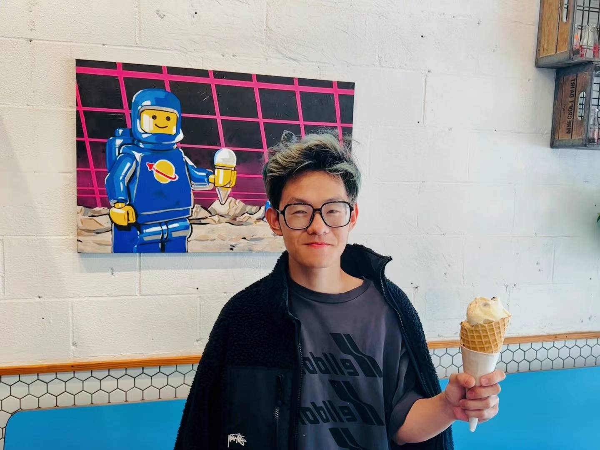
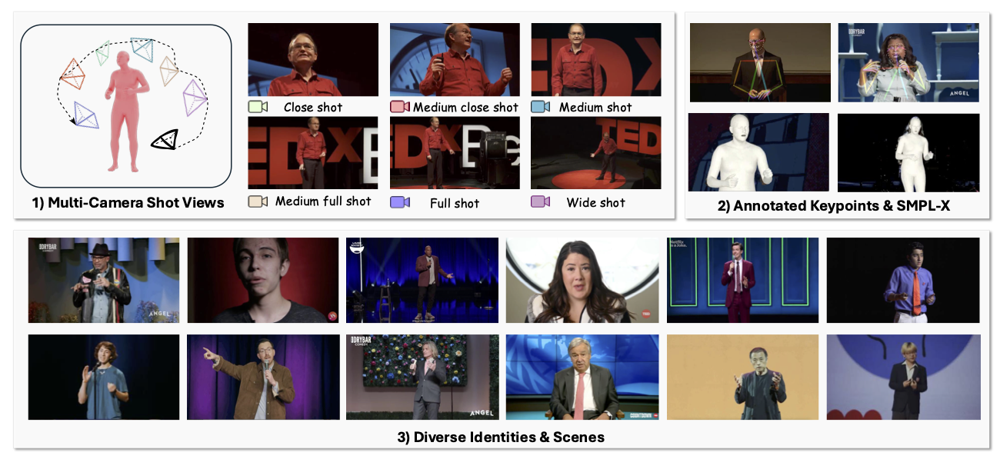
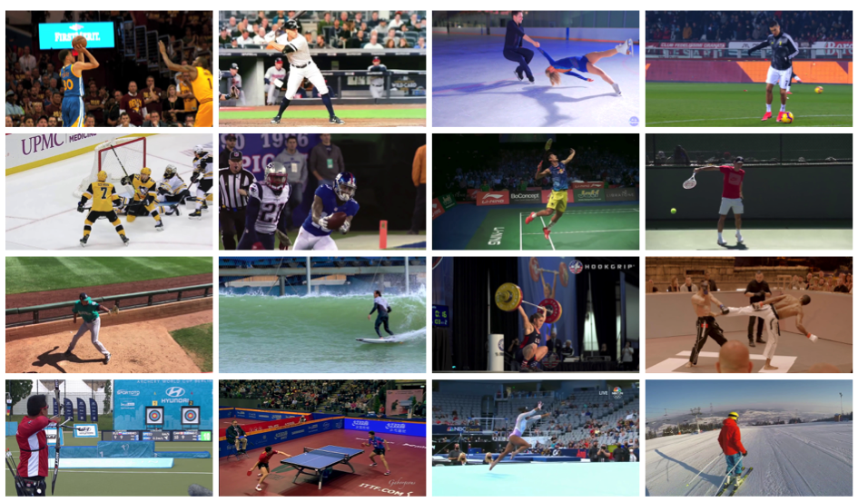
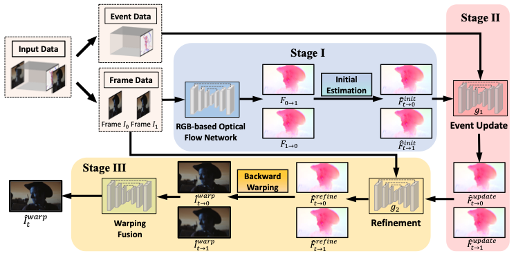
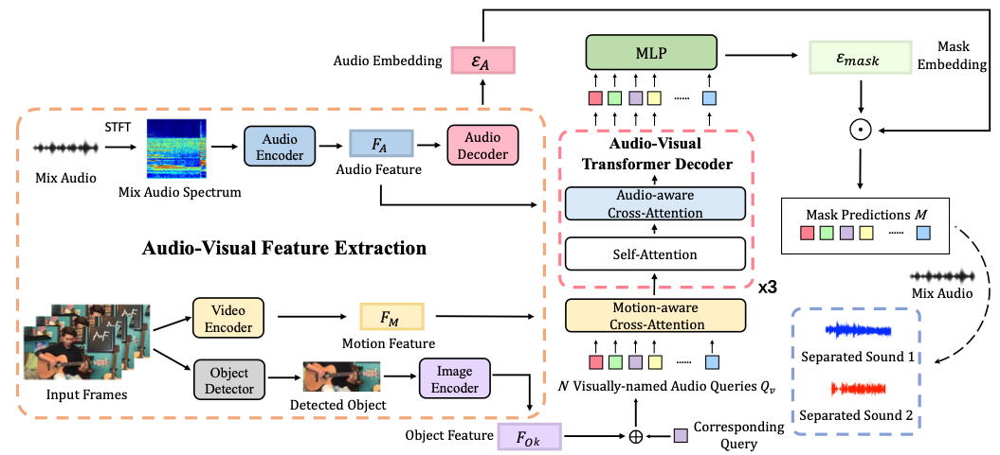
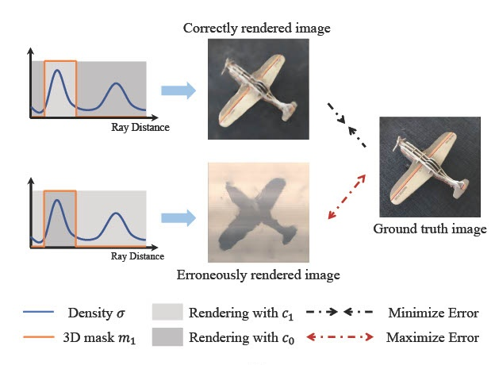
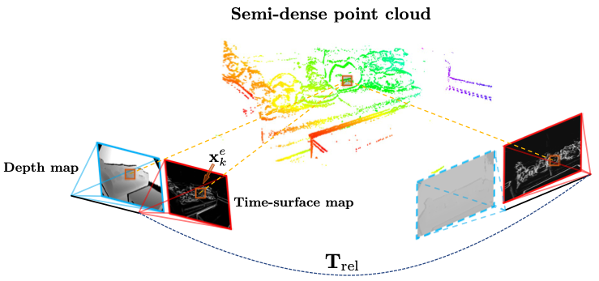
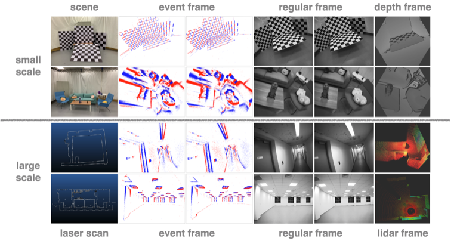

|
Jiaben Chen I am a second-year Ph.D. student in Computer Science at UMass Amherst, advised by Prof. Chuang Gan. My primary research interest lies in multi-modality learning and video synthesis. I received my master's degree in Computer Science at CSE of University of California, San Diego, where I was mentored by Prof. Xiaolong Wang. Before graduate study, I received my bachelor's degree in Computer Science and Technology at SIST of ShanghaiTech University. During my junior and senior years, I had the privilege of working with Prof. Jianbo Shi at University of Pennsylvania as a research intern. I spent a happy summer as a research intern at Meta Reality Labs working with Chengde Wan in 2025. Email / Google Scholar / Github / Twitter / LinkedIn |
 |
Publications* indicates equal contributions. |
|
 |
TalkCuts: A Large-Scale Dataset for Multi-Shot Human Speech Video Generation
Jiaben Chen*, Zixin Wang*, Ailing Zeng, Yang Fu, Xueyang Yu, Siyuan Cen, Julian Tanke, Yihang Chen, Koichi Saito, Yuki Mitsufuji, and Chuang Gan Neural Information Processing Systems (NeurIPS), 2025 project page / paper / code In this work, we present TalkCuts, a large-scale benchmark dataset designed to facilitate the study of multi-shot human speech video generation. |

|
RapVerse: Coherent Vocals and Whole-Body Motions Generations from Text
Jiaben Chen, Xin Yan, Yihang Chen, Siyuan Cen, Zixin Wang, Qinwei Ma, Haoyu Zhen, Kaizhi Qian, Lie Lu, and Chuang Gan International Conference on Computer Vision (ICCV), 2025 project page / paper / code In this paper, we introduce a challenging task for simultaneously generating 3D holistic body motions and singing vocals directly from textual lyrics inputs. To facilitate this, we first collect the RapVerse dataset, a large dataset containing synchronous rapping vocals, lyrics, and high-quality 3D holistic body meshes. |
|
 |
SportsSloMo: A New Benchmark and Baselines for Human-centric Video Frame Interpolation
Jiaben Chen, and Huaizu Jiang Computer Vision and Pattern Recognition Conference (CVPR), 2024 project page / paper / code In this paper, we introduce SportsSloMo, a benchmark consisting of more than 130K video clips and 1M video frames of high-resolution (≥720p) slow-motion sports videos, for human-centric video frame interpolation. |

|
Deceptive-NeRF/3DGS: Diffusion-Generated Pseudo-Observations for High-Quality Sparse-View Reconstruction
Xinhang Liu, Jiaben Chen, Shiu-Hong Kao, Yu-Wing Tai, and Chi-Keung Tang European Conference on Computer Vision (ECCV), 2024 project page / paper / In this work, we enhance sparse-view reconstruction by leveraging a diffusion model pre-trained from multiview datasets to synthesize pseudo-observations. |

|
RoboDreamer: Learning Compositional World Models for Robot Imagination
Siyuan Zhou, Yilun Du, Jiaben Chen, Yandong Li, Dit-Yan Yeung, and Chuang Gan International Conference on Machine Learning (ICML), 2024 project page / paper / code In this paper, we introduce RoboDreamer, an innovative approach for learning a compositional world model by factorizing the video generation. |

|
UniMuMo: Unified Text, Music and Motion Generation
Han Yang, Kun Su, Yutong Zhang, Jiaben Chen, Kaizhi Qian, Gaowen Liu, and Chuang Gan Annual AAAI Conference on Artificial Intelligence (AAAI), 2025 project page / paper / In this paper, we introduce UniMuMo, a unified multimodal model capable of taking arbitrary text, music, and motion data as input conditions to generate outputs across all three modalities. |
|
 |
Revisiting Event-based Video Frame Interpolation
Jiaben Chen, Yichen Zhu, Dongze Lian, Jiaqi Yang, Yifu Wang, Renrui Zhang, Xinhang Liu, Shenhan Qian, Laurent Kneip, and Shenghua Gao IEEE/RSJ International Conference on Intelligent Robots and Systems (IROS), 2023 project page / paper / video In this paper, we revist event-based video frame interpolation with a proxy-guided synthesis strategy and a event-guided optical flow refinement strategy. |
|
 |
iQuery: Instruments as Queries for Audio-Visual Sound Separation
Jiaben Chen, Renrui Zhang, Dongze Lian, Jiaqi Yang, Ziyao Zeng, and Jianbo Shi Computer Vision and Pattern Recognition Conference (CVPR), 2023 project page / paper / arXiv / video / code In this paper, we re-formulate visual-sound separation task and propose Instrument as Query (iQuery) with a flexible query expansion mechanism. |
|
 |
Unsupervised Multi-View Object Segmentation Using Radiance Field Propagation
Xinhang Liu, Jiaben Chen, Huai Yu, Yu-Wing Tai, and Chi-Keung Tang Neural Information Processing Systems (NeurIPS), 2022 project page / paper / code / data In this paper, we propose radiance field propagation (RFP), a novel approach to segment objects in 3D during reconstruction given only unlabeled multi-view images of a scene. |
|
 |
DEVO: Visual Odometry in Challenging Conditions using a Stereo Event Depth Camera
Yi-Fan Zuo*, Jiaqi Yang*, Jiaben Chen, Xia Wang, Yifu Wang, and Laurent Kneip International Conference on Robotics and Automation (ICRA), 2022 paper In this paper, we proposed a novel real-time visual odometry framework for a stereo setup of a high-resolution event and depth camera to deal with challenging conditions. |
|
AutoVideo: An Automated Video Action Recognition System
Daochen Zha*, Zaid Pervaiz Bhat*, Yi-Wei Chen*, Yicheng Wang*, Sirui Ding*, Jiaben Chen*, Kwei-Herng Lai*, Mohammad Qazim Bhat*, Anmoll Kumar Jain, Alfredo Costilla Reyes, Na Zou, and Xia Hu International Joint Conference on Artificial Intelligence (IJCAI), 2022 paper / video / code In this paper, we presented AutoVideo, a Python system for video action recognition based on Automated Machine Learning. |
|
|
 |
VECtor: A Versatile Event-Centric Benchmark for Multi-Sensor SLAM
Ling Gao*, Yuxuan Liang*, Jiaqi Yang*, Shaoxun Wu, Chenyu Wang, Jiaben Chen, and Laurent Kneip Robotics and Automation Letters (RA-L), 2022 International Conference on Intelligent Robots and Systems (IROS), 2022 paper / benchmark In this paper, we proposed the first complete multi-sensor benchmark dataset containing an event-based stereo camera, a regular stereo camera, multiple depth sensors, and an inertial measurement unit. |
Experience |
|
Service |
|
Miscellanea |
Personal Interests:
|
|
Last update: Oct, 2025 |
|
Design and source code from Jon Barron's website. |